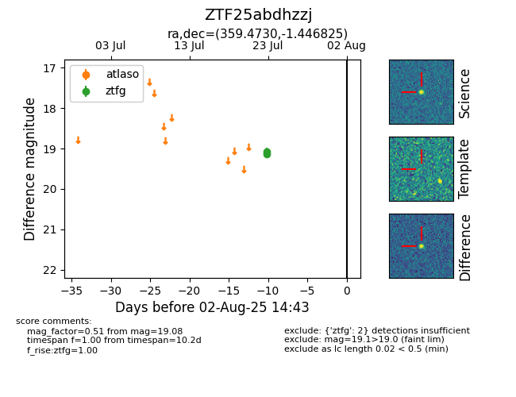

Target ZTF25abdhzzj at 2025-08-06 17:45, see:
FINK: fink-portal.org/ZTF25abdhzzj
Lasair: lasair-ztf.lsst.ac.uk/objects/ZTF25abdhzzj
ALeRCE: alerce.online/object/ZTF25abdhzzj
alt names
ZTF25abdhzzj (ztf,fink)
coordinates:
equatorial (ra, dec) = (359.4730,-1.44683)
galactic (l, b) = (94.1312,-61.28792)
photometry
last ztfg=19.08
2 ztfg detections
